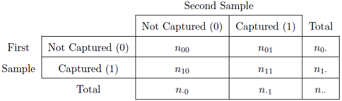

Single Census Mark-Recapture Methods
Petersen Method
The Petersen method consists of two samples from a closed population and is, thus, the simplest of the broad array of mark-recapture techniques for estimating animal abundance. The population and sampling scheme for the two samples (\(i=1,2\)) of the Petersen method are represented in Figure 1. The large squares just to the left of the “i=” vertical lines represent the population just before the \(i\)th sample is taken. The large square just after the “i=1” vertical line represents the population just after the first sample was taken. Thus, under the assumption that the population is closed, the population immediately after the first sample is the same as the population immediately before the second sample. The samples are represented by the small grey boxes just above each “i=” vertical line.

Figure 1: Schematic representation of the two samples (\(i=1,2\)) in a Petersen mark-recapture study. See the text for detailed description and Table 2 for definitions of notation.
The population initially consists of all unmarked animals. All fish in the first sample are then marked and returned to the population. The first sample does not necessarily need to be a random sample of the population although the assumptions for the second sample are more likely to be met if it is. In addition, the fish can receive a batch mark, i.e., each fish does not need to be uniquely identified1. The second sample must be a random sample from the entire population of marked and unmarked individuals such that each fish, whether marked or unmarked, has the same chance of being captured. This also implies that the marked fish mix randomly with the unmarked fish in the population Figure 1. Each fish in this second sample is examined to determine if it has the mark from the first sample or not.
The summary data for a Petersen estimate can be shown in the format of capture histories Table 1. However, the more traditional notation of \(N=n_{\cdot\cdot}\), \(M=n_{1\cdot}\), \(n=n_{\cdot 1}\), and \(m=n_{11}\) for ease of comparison to other sources will be used throughout this vignette2. Remember that the capitalized symbols refer to the population (i.e., \(N\) is number of fish in the population, \(M\) is the number of marked fish in the population) whereas the lower-case letters refer to the second sample (i.e., \(n\) is the number of fish captured in the second sample, \(m\) is the number of marked fish captured in the second sample). The meaning of the symbols used in the Petersen method are shown in Table 2.
Table 1: Summary data matrix for the two samples in a Petersen mark-recapture framework. Note that a zero indicates the fish were not captured in that sample and a one indicates that the fish were captured in that sample.

Table 2: Summary of notation used in the Petersen method.
| Symbol | Meaning |
|---|---|
| \(N\) | The unknown size of the population just prior to the first sample. |
| \(M\) | The number of fish from the first sample that were marked and returned to the population. |
| \(n\) | The number of fish in the second sample. |
| \(m\) | The number of marked fish in the second sample. |
| \(\widehat{N}\) | The estimated size of the population just prior to the first sample. |
The Petersen estimate of abundance can be derived from the initial assumption that if the second sample is a random sample of the population of marked and unmarked animals, then the proportion of marked animals in the second sample should equal the proportion of marked animals in the population, i.e.,
\[ \frac{m}{n} = \frac{M}{N} \]
A rearrangement of this equality gives an estimate of the size of the population, i.e.,
\[ \hat{N} = \frac{Mn}{m} \quad \quad \text{(1)} \]
Thus, the total population size can be estimated from the number of marked animals, the number of animals observed in the second sample, and the number of animals in the second sample that had the mark.
Approximate confidence intervals for \(N\) are often used,3 with the specific form of the approximation depending on characteristics of the number of marked and recaptured fish. Seber (1982) suggests the following sequential “rules” (i.e., stop at the step where you answer “yes”) for choosing the method for approximating the confidence interval for \(N\) in the Petersen method when sampling without replacement:
- Is the fraction of marked fish in the second sample “large” (i.e., \(\frac{m}{n}>0.10\))? – Use the binomial approximation?
- Is the number of marked fish in the second sample “large” (i.e., \(m>50\))? – Use the normal approximation?
- Use the Poisson approximation.
Both the binomial and normal approximation methods identify a confidence interval for the ratio of marked fish in the second sample (i.e., \(\frac{m}{n}\)) and then the endpoints of these intervals are substituted into the modified Petersen equation,
\[ \hat{N} = \frac{Mn}{m} = \frac{M}{\frac{m}{n}} \]
to derive endpoints of the confidence interval for \(N\). The binomial approximation method constructs the interval for \(\frac{m}{n}\) with computer algorithms of the binomial distribution. The normal approximation is considered a large-sample method where the standard error for \(\frac{m}{n}\) is estimated with
\[ SE_{\frac{m}{n}} = \sqrt{\left(1-\frac{m}{M}\right)\frac{\frac{m}{n}\left(1-\frac{m}{n}\right)}{n-1}} + \frac{1}{2n} \]
The confidence interval is then constructed in the usual way with \(\frac{m}{n}\pm Z^{*}SE_{\frac{m}{n}}\).
The Poisson approximation operates similarly, except that it uses computer algorithms of the Poisson distribution to construct a confidence interval for \(m\), the endpoints of which are then substituted back into Equation 1 to derive the confidence interval for \(N\).
Modifications of the Petersen Method
The Petersen method of estimating abundance is the best asymptotically normal estimator as \(N\) approaches infinity but, unfortunately, it is biased, especially for small samples. Chapman (1951) showed that when \(M+n \geq N\) that
\[ \hat{N} = \frac{(M+1)(n+1)}{(m+1)}-1 \quad \quad \text{(2)} \]
is an exactly unbiased estimator of \(N\).4 If \(M+n < N\), then Robson and Regier (1964) showed that the bias of Equation 2 is less than 2% if \(\frac{Mn}{N}>4\). Unfortunately, \(N\) is usually unknown. However, Robson and Regier (1964) note that if \(m\geq7\) then there is a 95% chance that \(\frac{Mn}{N}>4\) and the bias of Equation 2 can be considered negligible (Seber 1982). Thus, a given study should be designed so that enough fish are marked and the second sample is large enough to ensure that more than seven marked fish are recaptured.
A final modification was proposed by Bailey (1951) and Bailey (1952). Bailey’s method is appropriate if the second sample of fish is collected with replacement (i.e., an individual may be counted more than once). This type of sampling happens most often if the tagged fish are simply observed rather than captured. Bailey showed that Equation 1 is biased under these conditions and that his modified estimator,
\[ \hat{N} = \frac{(M)(n+1)}{(m+1)} \quad \quad \text{(3)} \]
is nearly unbiased if \(m\geq7\).
Confidence intervals for \(N\) from these modified estimators use techniques similar to those described for the Petersen method. However, the binomial and normal confidence intervals for the ratio \(\frac{m}{n}\) must be converted to a confidence interval for \(m\) by multiplying the endpoints by \(n\). The endpoints of the confidence interval for \(m\) are then substituted into Equation 2 or Equation 3 to obtain confidence intervals for \(N\).
Calculations in R
Methods for performing the Petersen and related methods in R are described in Section 9.2 of Ogle (2016).5